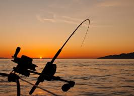
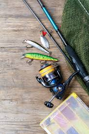
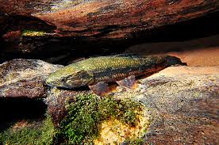
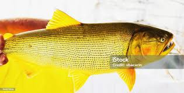
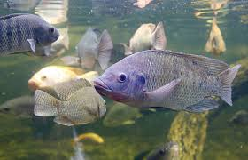

Pesca
Me chamo nathan gosto muito de pescar gosto de pesca mais em, tanques do que em rios.
Minha pesca favorita é a de Dourados e traíras pois utiliso de íscas artificiais para pescar.
o lugar onde mais pesco é no meu vo.
o que levo comigo:
- vara
- caixa de pesca
- protetor
- iscas

lista dos principais paixes
- traira

- dourado

- tilapia

preparativos
- linha
- passar a linha na vara
- iscas artificiais
- escolher a qual vou usar
- iscas vivas
- qual a melhor para o horario